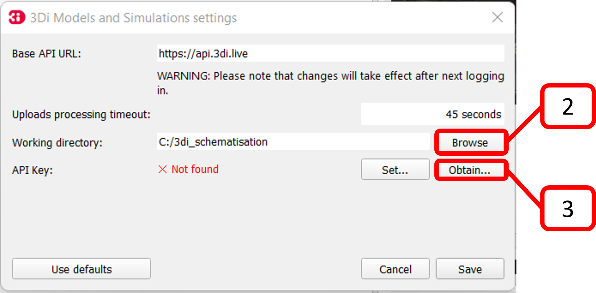
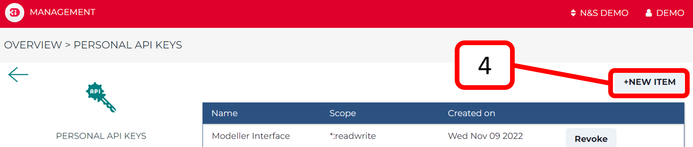
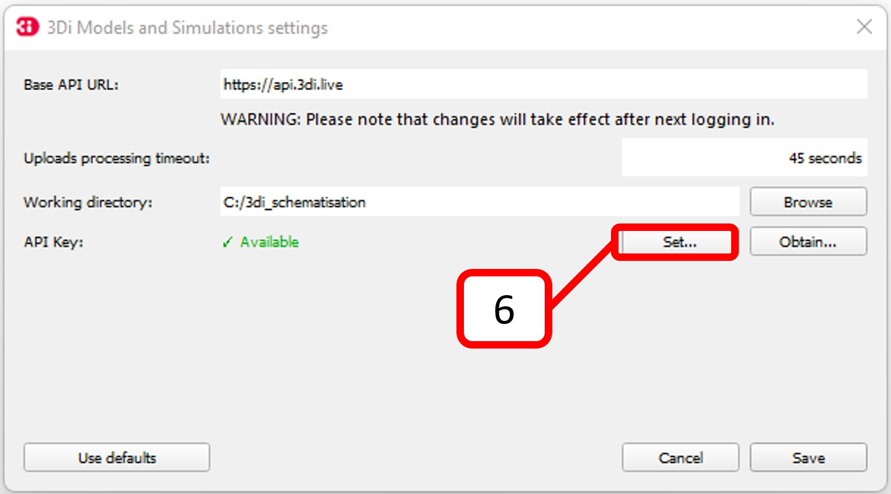

3Di Models and Simulations Plugin
with this plugin you can:
Create new schematisations
Download existing schematisations
Edit schematisations
Upload new revisions of a schematisation
Generate a 3Di model from a schematisation
Start a simulation
Download results
Analyse results
Setting up the 3Di Models and Simulations Plugin
Note
This step needs to be done just once.
Open your Modeller Interface and click on the 3Di Models and Simulations icon (
 ). You should now see the Models and Simulations plugin panel.
). You should now see the Models and Simulations plugin panel.Click ‘Browse’ and set a local working directory.
 Click ‘Obtain…’ to obtain your Personal API Key. You will be redirected.
Click ‘+NEW ITEM’, enter a name and click ‘Submit’.
 You now have your own personal API Key. Copy it () and go back to the Modeller Interface.
Click ‘Set…’ and paste your Personal API Key. Then press ‘Save’.
 You are now logged in and your name should appear after User. You can now easily log out by clicking on the cross.

And log in by clicking on the arrow.

{kind=link}
{kind=link}